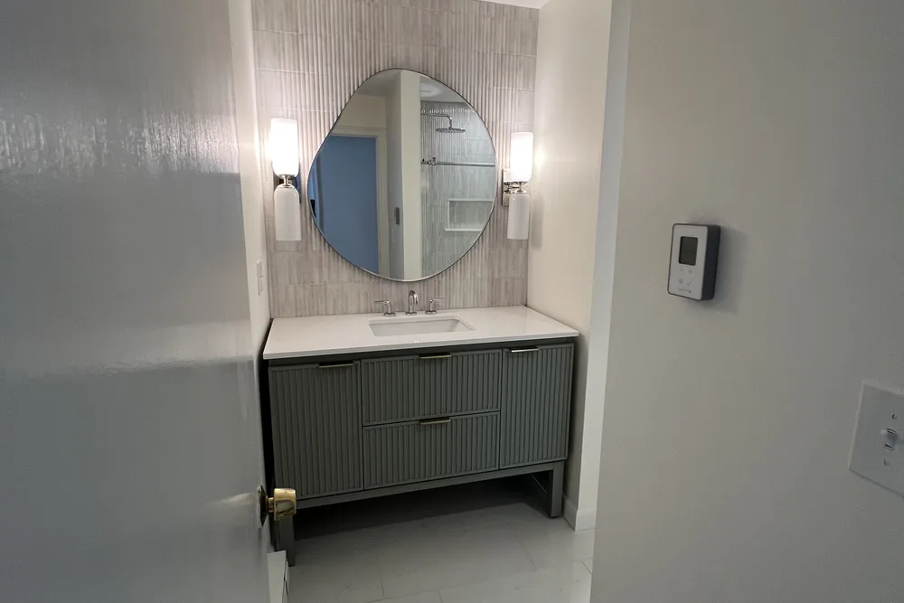
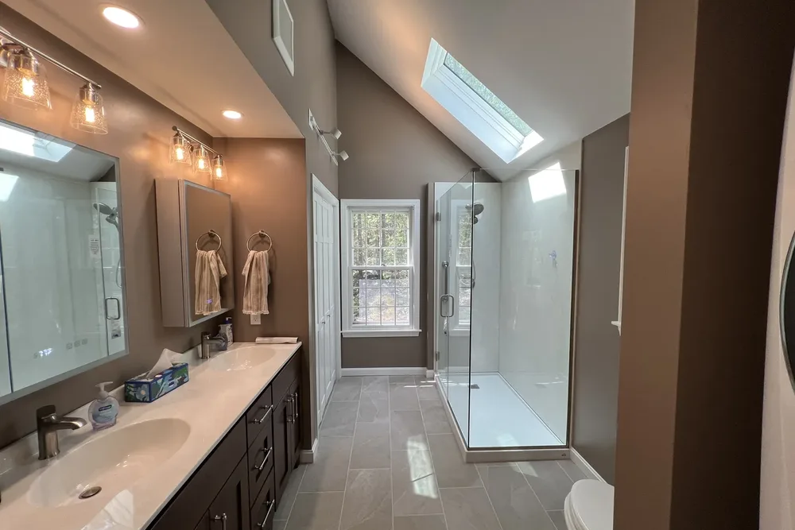
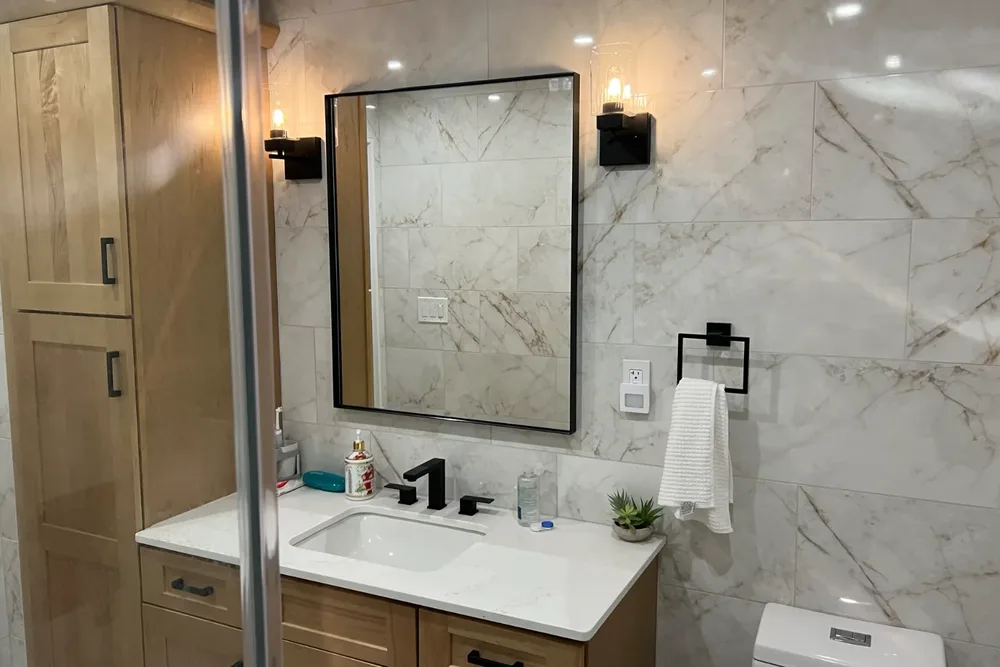
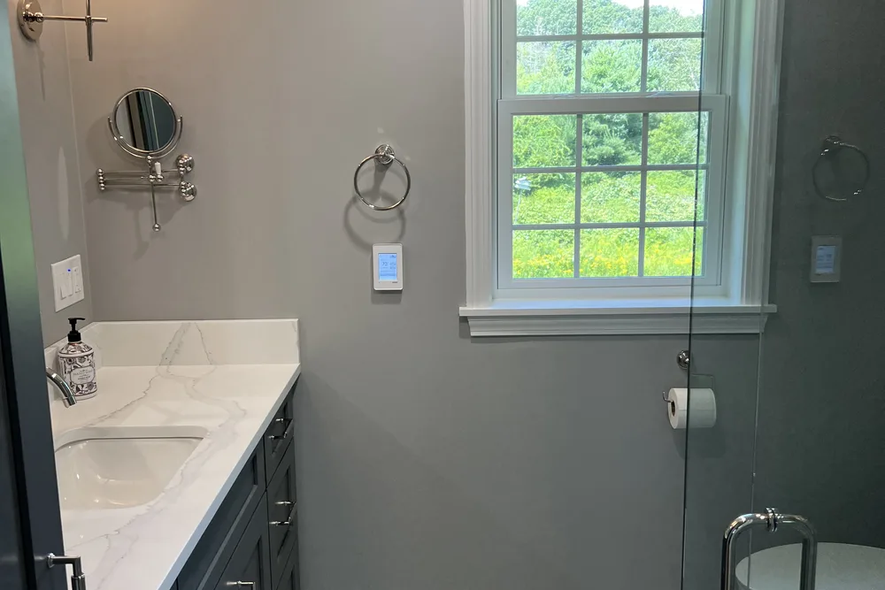
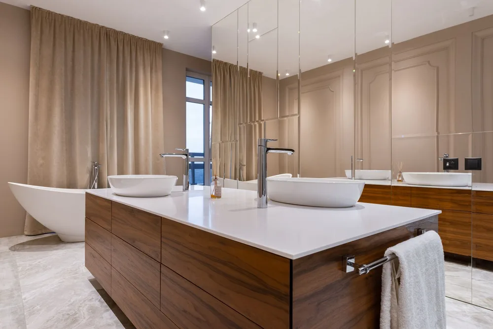
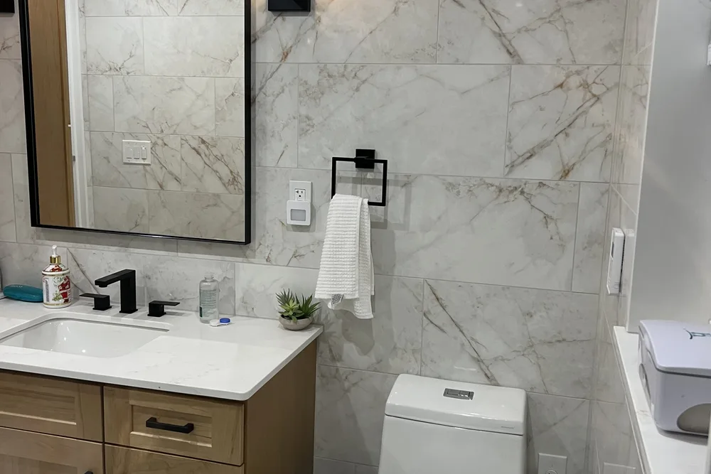
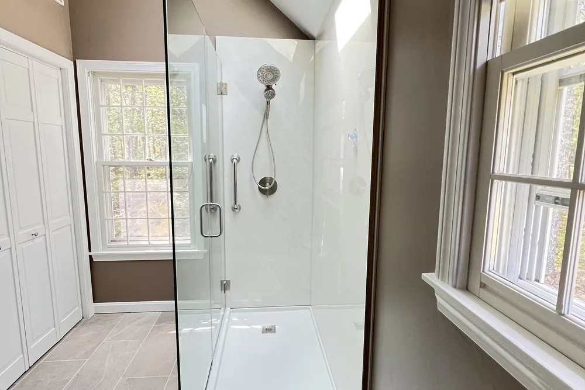

Gloucester bathroom remodeling contractors
Gloucester bathroom remodeling for tile, fixtures and a finish that lasts
Gloucester bathroom remodeling from DeFaria Construction covers the rough-in, waterproofing, tile and fixtures, planned before demolition so the finished bathroom holds up to daily use and Massachusetts winters.
Local search focus
Gloucester bathroom remodeling is about what happens behind the tile.

Across Annisquam, Lanesville, Magnolia, East Gloucester, West Gloucester, Bay View, Riverdale and Rocky Neck, Gloucester ranges from a dense harbor core to outlying Cape Ann villages of 18th- and 19th-century maritime cottages and waterfront homes. A lasting Gloucester bathroom remodel depends on clean rough-in, proper waterproofing and ventilation before anyone sees a single tile.
This page is built for Gloucester homeowners comparing bathroom remodeling contractors near them. It connects the Gloucester search to project photos, neighborhoods, the full bathroom scope and a direct estimate path.
- Clear estimate conversations before the project starts.
- Direct communication with the homeowner from walkthrough to final walkthrough.
- Local coverage across Gloucester and the wider Essex County area.
The scope
What a full Gloucester bathroom remodel covers

In Gloucester, 18th- and 19th-century maritime homes and waterfront residences across its Cape Ann villages often add layout and access constraints.
- Clean rough-in for plumbing and any layout change, checked for waterproofing before tile.
- Tile, vanity, fixtures and lighting selected and coordinated for a durable, water-tolerant finish.
- Ventilation, moisture control and finish carpentry handled so the room holds up over time.
Gloucester permits and inspections run through the City of Gloucester Inspectional Services, and DeFaria keeps that step organized so scope and timeline stay realistic.
Cost
How much does a bathroom remodel cost in Gloucester?

For a Gloucester bathroom, budget roughly $12,000 to $25,000 for a full standard remodel and $25,000 to $45,000 or more for a large or high-end build. The estimate follows the actual work, never a one-size number.
- Size of the bathroom and whether the layout or plumbing moves.
- Tile, vanity, fixture and lighting grade you choose.
- Age and condition of the home, including hidden rot or old plumbing.
- How much waterproofing, ventilation and finish carpentry the room needs.
Because 18th- and 19th-century maritime homes and waterfront residences across its Cape Ann villages often add layout and access constraints in Gloucester, hidden conditions behind the walls are priced honestly at the walkthrough, not discovered mid-project.
DeFaria gives a fixed, itemized Gloucester estimate at the walkthrough, so the price matches the actual scope instead of a guess.
Process
How a Gloucester bathroom remodel runs, step by step

Most Gloucester bathroom remodels follow the same clear path, so you always know what happens next.
- Walkthrough and a clear, itemized estimate.
- Design and material selection: tile, vanity, fixtures and lighting.
- Protection of the home and demolition of the existing bathroom.
- Plumbing and electrical rough-in for the new layout.
- Waterproofing and moisture control behind the tile.
- Tile, vanity, fixtures and finish carpentry.
- Paint, final details and a walkthrough before you sign off.
DeFaria coordinates the Gloucester permit with the City of Gloucester Inspectional Services before the rough-in, and keeps you updated at each step.
Plan on roughly 2 to 4 weeks for a Gloucester bathroom once the materials are in, depending on scope.
Materials
Materials and finishes that hold up in Gloucester bathrooms

In Essex County, bathrooms face humidity, hard water and cold winters, so durability drives the finish, not just looks.
- Waterproofing membranes and correct sloping so water goes where it should.
- Durable porcelain tile, quality grout and sealed transitions.
- An exhaust fan that actually moves the air, not just spins.
- Vanities, hardware and paint rated for a wet, humid room.
In Annisquam, Lanesville and the rest of Gloucester, 18th- and 19th-century maritime homes and waterfront residences across its Cape Ann villages often add layout and access constraints, so durability drives the material choices.
When to remodel
Signs it is time to remodel your Gloucester bathroom

A few clear signs a Gloucester bathroom is ready for a remodel:
- Recurring leaks, soft floors or water stains.
- Mold, mildew or poor ventilation.
- Dated or failing fixtures, tile and vanities.
- A layout that wastes space or does not fit the household.
- Planning to sell and wanting a stronger return.
Older homes around Annisquam and Lanesville in Gloucester show these first.
Project photos
Bathroom Remodeling photos for Gloucester homeowners
The Gloucester bathroom remodeling page pairs local search intent with real project photos, so visitors see the finish level before requesting an estimate.
Areas covered
Bathroom Remodeling across Gloucester neighborhoods

DeFaria Construction supports bathroom remodeling searches across Gloucester and nearby Essex County towns, giving visitors enough local context to decide whether DeFaria is the right fit before they call.
From Annisquam to Rocky Neck, Gloucester homeowners get a bathroom remodeling permitted through the City of Gloucester Inspectional Services and matched to how local homes are built.
- Annisquam
- Lanesville
- Magnolia
- East Gloucester
- West Gloucester
- Bay View
- Riverdale
- Rocky Neck
Experience
Why this Gloucester page is built for real homeowners, not just keywords.
DeFaria Construction serves homeowners and businesses throughout Middlesex County and Essex County as a local, owner-run builder. With hands-on involvement from Luiz DeFaria and A+ BBB credibility, the Gloucester bathroom page is written around real scope, waterproofing and finish coordination, not a city name dropped into a template.
DeFaria Construction is a licensed and insured local contractor with an A+ BBB rating and verified customer reviews, and every Gloucester project is owner-led by Luiz DeFaria from the first walkthrough to the final one.
"the Gloucester crew handled the waterproofing and rough-in the right way, so the finish still looks new."
Gloucester homeowner
The goal is to help someone searching for Gloucester bathroom remodeling contractors understand the scope, the neighborhoods covered and how to start a direct conversation before requesting a free estimate.
Call (617) 893-2221 for a free estimateFAQ
Common questions about bathroom remodeling in Gloucester
What bathroom remodeling work does DeFaria Construction handle in Gloucester?
In Gloucester DeFaria Construction handles plumbing rough-in, waterproofing, tile, vanities, fixtures, ventilation and finish carpentry for a full or partial bathroom remodel.
How much does a bathroom remodel cost in Gloucester?
A Gloucester bathroom remodel usually runs from about $12,000 to $25,000 for a standard full remodel, and $25,000 to $45,000 or more for a large or high-end bathroom. DeFaria gives a fixed, itemized estimate at the walkthrough so the price matches the real scope.
How long does a Gloucester bathroom remodel take?
Most Gloucester bathroom remodels take about 2 to 4 weeks once materials are on site, depending on the scope and whether the layout changes.
Can a small Gloucester bathroom be remodeled without moving walls?
Often yes. Many Gloucester bathrooms gain the most from better fixtures, tile, storage and lighting inside the existing footprint before anyone considers moving plumbing or walls.
Is DeFaria Construction licensed and insured?
Yes. DeFaria Construction is a licensed and insured contractor with an A+ BBB rating and verified reviews, and every Gloucester project is owner-led by Luiz DeFaria.
Does DeFaria handle Gloucester bathroom permits and inspections?
Yes. Gloucester permits and inspections run through the City of Gloucester Inspectional Services, and DeFaria keeps that step organized so scope and timeline stay realistic.